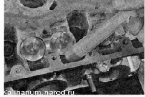
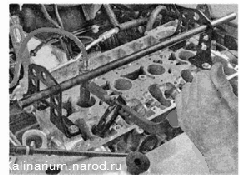
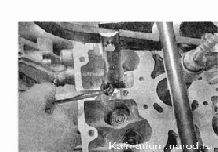
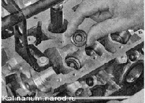
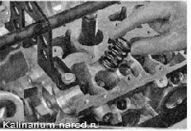
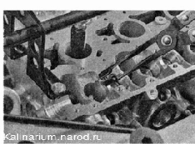
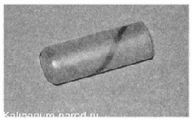
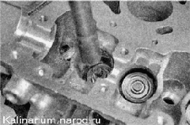

Маслосъемные колпачки - заменаЗаменить маслосъемные колпачки клапанов можно не снимая головки с блока цилиндров. Для рассухаривания клапанов требуется компрессор и переходник со шлангом для нагнетания воздуха в цилиндр через свечное отверстие. Можно рассухарить клапан без использования сжатого воздуха, если поршень находится в самом верхнем положении (ВМТ), но при этом трудно установить сухари. Для этого потребуется помощник, чтобы пинцетом приподнять, клапан и удерживать его в верхнем положении во время установки сухарей. Поэтому работу удобнее выполнять на снятой головке блока цилиндров. Для выполнения работы потребуются: — компрессор (развиваемое давление не менее 2 бар) со шлангом; — переходник для шланга с резьбой под свечное отверстие; — рассухариватель; пинцет; — съемник маслосъемных колпачков; — оправка для запрессовки колпачков. Снятие 1. Поворачиваем коленчатый вал в положение ВМТ такта сжатия первого цилиндра и снимаем распределительные валы и фиксируем коленчатый вал в таком положении, включив высшую передачу в коробке передач. 2. Медицинским шприцем (грушей или чистой ветошью) удаляем остатки масла из ниш головки блока цилиндров. 
3. Извлекаем из посадочных отверстий в головке гидротолкатели.
4. Заворачиваем в свечное отверстие переходник, подсоединяем к нему шланг от компрессора и подаем сжатый воздух. Совет 5. Устанавливаем кронштейн рассухаривателя на головку блока цилиндров. 
6. Заводим захват рассухаривателя под головку болта, а упор устанавливаем на тарелку пружины. При выполнении следующей операции не поцарапайте рассухаривателем стенки посадочного отверстия гидротолкателя! 7. Надавив на ручку рассухаривателя, сжимаем пружину клапана. 8. Удерживая пружину сжатой, пинцетом извлекаем два сухаря клапана. 
9. Плавно отпускаем пружину и снимаем рассухариватель. 10. Пинцетом снимаем тарелку пружины... ...и извлекаем пружину. 11. Устанавливаем захват съемника на маслосъемный колпачок. Спрессовываем колпачок с направляющей втулки клапана. Установка 1. Наносим чистое моторное масло на рабочую кромку нового маслосъемного колпачка и стержень клапана. 2. Чтобы не повредить рабочую кромку колпачка, надеваем на стержень клапана направляющую пластмассовую оправку (как правило, входит в комплект новых колпачков) так, чтобы она закрыла проточки на стержне. 3. Надеваем маслосъемный колпачок на стержень клапана и снимаем направляющую оправку. Замечание При отсутствии оправки колпачок следует надевать очень аккуратно, чтобы не повредить его об острые кромки проточек стержня клапана. 4. Легкими ударами молотка через оправку, напрессовываем колпачок на направляющую втулку клапана. Для напрессовки колпачка можно использовать торцовый ключ с глубокой двенадцатигранной головкой на 12 мм или шестигранной головкой на 11 мм. 5. Устанавливаем пружину, тарелку пружины и сухари в последовательности, обратной снятию. 6. Аналогично заменяем маслосъемные колпачки остальных клапанов первого и четвертого цилиндров (их поршни находятся в положении ВМТ), после чего поворачиваем коленчатый вал двигателя на 180° и заменяем колпачки клапанов второго и третьего цилиндров. 7. Устанавливаем детали в последовательности, обратной снятию. |